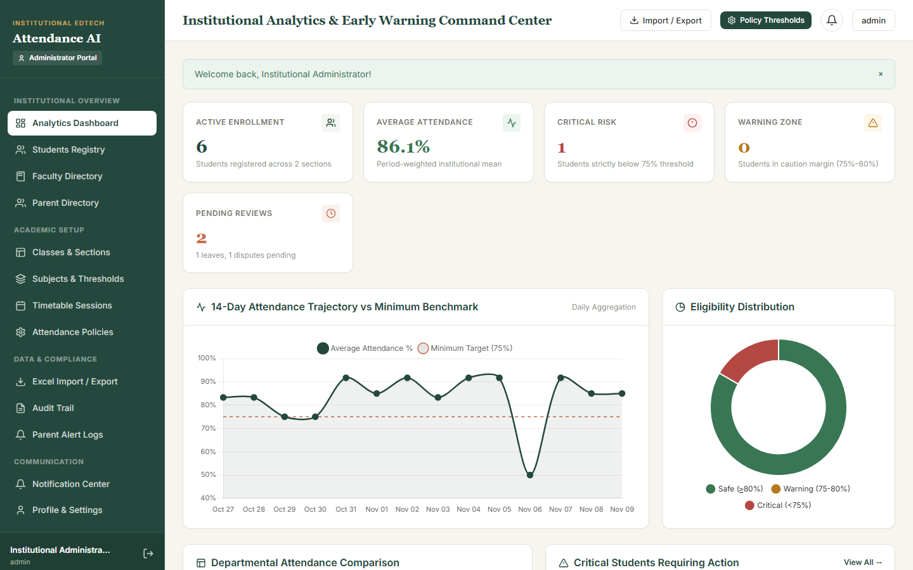

ATTENDANCE
INTELLIGENCE.
A 4-portal Django 5.1.15 period-wise attendance intelligence and early-warning system built over 22 normalized models — delivering closed-form recovery projections, What-If simulators, idempotent parent absence alerts, OD workflows, and ML risk explainability.

INTERVENING BEFORE DEBARMENT BECOMES MATHEMATICALLY IMPOSSIBLE.
Whole-day attendance masks period skips until exam week. This system logs period-by-period sessions, notifies parents immediately, and tells students the exact consecutive classes needed to recover.
4 Role-Scoped Portals
Dedicated experiences for Admin (analytics & policy), Faculty (timetable rollup & approvals), Student, and Parent.
Exact Recovery Formula
Computes exact consecutive classes S = max(0, ceil((T*N - P)/(1-T))) required to hit target threshold T, handling edge cases safely.
What-If Recovery Simulator
Lets students model upcoming attend/miss scenarios interactively per subject alongside Safe (>=80%)/Warning/Critical tiers.
Idempotent Parent Alerts
Dispatches deduplicated absence notifications and collects structured parental absence explanations.
OD, Leave & Dispute Audits
Tracks symposium/hackathon On-Duty applications and roll-call edits with mandatory faculty edit reason trails.
Decision Tree & Excel Sync
Pairs explainable rule-based velocity flags with a Scikit-Learn Decision Tree risk service and formula-safe OpenPyXL exports.
HOW IT WORKS.
Centralized calculation, risk, notification, ML, and OpenPyXL services power all 4 Django role views over 22 ORM tables.
Period Roll
Faculty marks period attendance & OD.
Recovery Math
Compute period % & consecutive target S.
Risk Engine
Velocity rules + Decision Tree score.
Parent Alerts
Idempotent absence notifications sent.
4 Portals
Admin BI, Student What-If & Excel export.
APPLICATION SCREENSHOTS.
Live screens captured from the running application. Click any image to view full size, or follow setup instructions in the GitHub repository.
RECOVERY MATHEMATICS & GOVERNANCE CONTROLS.
Key modules, rules, safety checks, and automated test results documented in the repository.
| Engine Component | Mathematical / Policy Rule | Verified Behavior |
|---|---|---|
| Calculation Engine | S = max(0, ceil((T * N - P) / (1 - T))) | Handles 0-session & 100%-target guards |
| Risk Classification | Safe >= 80% | Warning | Critical tiers | Early absence velocity alerts |
| Audit & Disputes | Mandatory reason log on faculty edits | Prevents silent roll-call tampering |
| Test Suite | tests/ covering formulas, portals & Excel | 25 / 25 Passed (100%) |
CORE TECHNOLOGIES.
Frameworks, databases, visualization tools, and testing libraries used in Student Attendance Intelligence.
FUTURE ENHANCEMENTS.
Upcoming improvements planned for Student Attendance Intelligence.
EXPLORE SOURCE & DOCS.
View the complete codebase, sample datasets, quick-launch scripts, and automated test suites on GitHub.